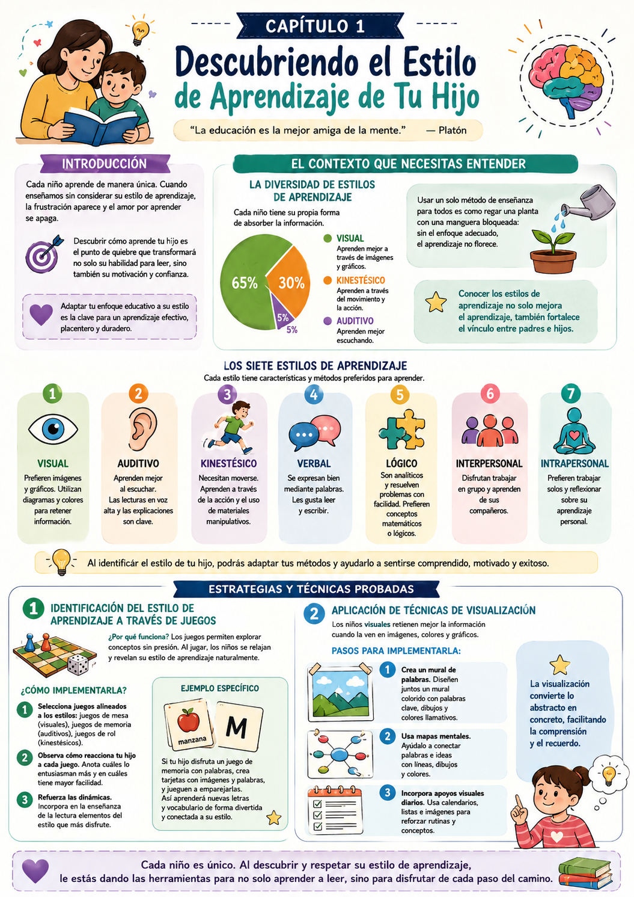

¿Intentaste enseñarle a leer a tu hijo y se frustró —o te frustraste vos— sin entender por qué? La mayoría de las veces la causa no es que al nene "no le da la cabeza". Es que el método que usás no conecta con cómo él aprende.
Cada chico tiene su propio estilo de aprendizaje. Identificarlo es el cambio que transforma no solo su habilidad para leer, sino su amor por los libros. Sin eso, podés esforzarte el doble y avanzar la mitad.
El círculo vicioso que hay que romper
Cuando el método no encaja con el estilo del nene, aparece la frustración — en él y en vos. Ese loop de desmotivación se rompe en cuanto encontrás el canal por donde él naturalmente absorbe la información.
✅ Antes de arrancar este capítulo

Tuki te dice:
No existe un método único que funcione para todos. Lo que existe es el método correcto para tu hijo. Este capítulo te ayuda a encontrarlo.
Muchos padres se desesperan al ver que sus hijos no responden al mismo método que funcionó para ellos en su infancia. Sin embargo, cada chico es único. Si no adaptás tu enfoque, podés estar alejando a tu hijo del aprendizaje sin darte cuenta, haciéndolo más difícil de lo que debería ser.
Cada chico tiene su propia forma de absorber la información. Según estudios recientes, aproximadamente el 65% de los estudiantes aprenden de manera visual, un 30% se inclina hacia métodos kinestésicos y un 5% se siente más cómodo con el aprendizaje auditivo. Estos números muestran la necesidad de personalizar la educación.
Imaginá que intentás enseñarle a leer a tu hijo usando solo libros de texto. Para un nene que aprende mejor con actividades prácticas, eso es tan efectivo como regar una planta con una manguera bloqueada. La clave está en reconocer que no todos los chicos se sienten atraídos por los mismos métodos. Y entender eso no solo mejora el aprendizaje — también fortalece la relación entre ustedes.
Visual
Aprende con imágenes, colores y gráficos. Retiene mejor cuando ve la información organizada.
Auditivo
Aprende mejor escuchando. La lectura en voz alta y las explicaciones son clave para él.
Kinestésico
Necesita moverse y tocar. Aprende a través de la acción y materiales manipulativos.
Verbal
Se expresa bien con palabras. Le gusta leer y escribir — el más natural para la lectura.
Lógico
Analítico y ordenado. Resuelve problemas con facilidad y prefiere estructuras claras.
Interpersonal
Aprende en grupo. Le va mejor practicar la lectura con otros chicos o con vos.
Intrapersonal
Prefiere trabajar solo y a su ritmo. Reflexiona sobre su propio aprendizaje — dale espacio.
¿Cómo identificás el estilo de tu hijo?
Observalo jugando. ¿Prefiere armar cosas con las manos (kinestésico), ver videos (visual), escuchar cuentos (auditivo) o leer solo en su cuarto (intrapersonal)? El juego libre revela el estilo natural más claramente que cualquier test.
Tuki te dice:
Tu hijo probablemente tenga uno o dos estilos dominantes. No te preocupés si combinás varios — lo importante es encontrar por dónde entra mejor la información.
Una vez que sabés cuál es el estilo de tu hijo, podés adaptar el enfoque. Acá van las tres estrategias más efectivas para identificarlo con precisión y aplicarlo directamente a la lectura.
Identificación por juegos
Observar para descubrir · Sin materiales especiales
Los juegos son una forma natural de aprendizaje. Cuando el nene juega sin presión, revela su estilo con más claridad que cualquier test formal. Usá eso a tu favor.
- 1Seleccioná varios tipos de juego: juegos de mesa para los visuales, juegos de memoria con palabras para los auditivos, juego de rol o construcción para los kinestésicos.
- 2Observá cómo reacciona a cada uno. ¿En cuál se engancha más? ¿En cuál muestra mayor facilidad natural?
- 3Incorporá elementos de ese estilo a la práctica de lectura. Si le gusta el juego de memoria, usá tarjetas con palabras e imágenes para emparejar.
Ejemplo concreto
Si tu hijo se emociona con el juego de memoria de palabras, usá ese mismo formato para enseñarle vocabulario nuevo — tarjetas con imágenes y palabras que tiene que emparejar. El aprendizaje se cuela sin que lo note.
Técnicas de visualización
Para chicos visuales · Fácil de aplicar en casa
Los chicos visuales absorben información mucho más rápido a través de imágenes y gráficos. Si tu hijo es visual, la lectura de texto plano puede aburrirlo aunque sepa leer perfectamente.
- 1Elegí libros con muchas ilustraciones y colores al principio.
- 2Creá "mapas de la historia" — un dibujo simple de inicio, nudo y desenlace.
- 3Usá colores para destacar palabras clave cuando practica la lectura.
- 4Asociá cada palabra nueva a una imagen mental o dibujada.
Ejemplo concreto
Si estás enseñando la palabra "árbol", mostrá una imagen al lado de la palabra escrita. Después pedile que dibuje su propio árbol y escriba la palabra debajo. Esa conexión queda fija en su memoria.
Práctica espaciada
Para consolidar el aprendizaje · Sesiones cortas y frecuentes
La práctica espaciada se basa en repasar la información en intervalos en lugar de sesiones largas concentradas. Es más efectiva para la retención a largo plazo y evita el agotamiento.
- 1Creá un calendario de lectura con tiempos específicos a lo largo de la semana — breves pero frecuentes.
- 2Después de cada sesión, revisá brevemente (5-10 min) las palabras aprendidas en la sesión anterior.
- 3Alternando entre libros, tarjetas y actividades interactivas. La variedad mantiene el interés y refuerza el aprendizaje desde distintos ángulos.
Ejemplo concreto
Si tu hijo aprendió 5 palabras nuevas hoy, revisalas mañana y de nuevo en 3 días. Ese repaso corto y espaciado hace que las palabras queden grabadas a largo plazo.
Tuki te dice:
No necesitás aplicar las tres estrategias al mismo tiempo. Empezá con la que más conecta con el estilo de tu hijo y después sumás las otras de a poco.
Acá están los ejercicios concretos para poner en práctica lo que aprendiste. Son actividades que podés hacer con tu hijo esta misma semana, sin materiales especiales.
Mural de Palabras Creativas
Junto con tu hijo, elegí 10 palabras que quiera aprender y diseñen un mural colorido con dibujos, fotos o recortes que representen cada palabra. Colocalo en un lugar visible.
- 1Elegí 10 palabras que quiera aprender esta semana.
- 2Pedile que dibuje o recorte imágenes que representen cada palabra.
- 3Juntos, peguen las palabras e imágenes en un orden atractivo en la cartulina.
- 4Colgalo donde lo vea todos los días — a la altura de sus ojos.
Juego de Memoria de Palabras
Creá tarjetas con pares de palabras e imágenes. Tu hijo tiene que encontrar los pares y leer cada palabra en voz alta cuando los da vuelta.
- 1Cortá cartulina en rectángulos del mismo tamaño — necesitás dos tarjetas por palabra.
- 2En una escribí la palabra; en la otra dibujá o pegá la imagen que la representa.
- 3Mezclá todas las tarjetas y colocalas boca abajo en una grilla.
- 4Cuando encuentra un par, que lo lea en voz alta antes de seguir jugando.
Mapa de Estilos de Aprendizaje
Ejercicio en familia · 30 minutos · Hojas, lápices y post-its
Este ejercicio crea un mapa visual que clarifica el estilo de aprendizaje de tu hijo y te ayuda a personalizar tu enfoque desde el primer día.
- 1Dibujá un círculo en el centro de una hoja y escribí el nombre de tu hijo. Eso es el núcleo del mapa.
- 2Creá 7 ramas, una por cada estilo de aprendizaje. Escribí una descripción breve en cada rama.
- 3Pedile a tu hijo que elija los estilos con los que más se identifica y que los marque con un post-it.
- 4Conversen sobre sus elecciones y definan juntos cómo van a adaptar la práctica de lectura a esos estilos.
Resultado esperado: Al terminar, tenés un mapa claro del estilo de tu hijo para guiar los próximos capítulos.
Diario de Lectura
Hábito diario · 15 minutos · Solo un cuaderno
Un diario de lectura sencillo donde tu hijo registra lo que lee y cómo lo vivió. Sirve para que vos veas qué formatos le gustan más y cuáles evita.
- 1Elegí un cuaderno o anotador que sea "de él" — que le guste el diseño.
- 2Creá un apartado donde anote el libro, cuánto leyó y qué sintió.
- 3Agregá una pregunta fija: "¿Qué fue lo que más te enganchó hoy?" — visual, una historia, el misterio, etc.
- 4Una vez por semana, revisá juntos el diario para identificar patrones en sus gustos.
Resultado esperado: En una semana tenés un registro claro de sus preferencias para ajustar el enfoque en los próximos días.
- 1 No involucrar al nene. Ignorar su opinión sobre su propio estilo puede hacer que se sienta desmotivado. Siempre preguntale qué le gusta y qué no — su respuesta es tu mejor información.
- 2 Forzar un estilo que no es el suyo. Cada chico es único. Tratar de imponer un método que no resuena con él crea frustración y desinterés en lugar de aprendizaje.
- 3 No ajustar las actividades. Si algo no funciona, no tengas miedo de cambiarlo. La flexibilidad es esencial. Un método que no conecta no es un fracaso — es información.
- 4 Olvidarte de celebrar los logros. Cada pequeño avance cuenta. Ignorar los progresos puede desincentivar a tu hijo. Celebrá cada triunfo, por chico que parezca.
- 5 Descuidar la práctica constante. La lectura es una habilidad que se fortalece con la repetición. Sesiones cortas y frecuentes valen más que sesiones largas y esporádicas.
Tuki te dice:
¡Muy bien! Ya tenés todo lo del Cap 1. Ahora mirá el resumen visual — es tu hoja de ruta para esta semana. Y después te espera el Cap 2: cómo crear el ambiente de lectura ideal para el estilo de tu hijo.
Esta infografía resume todo lo que vimos en el capítulo. Guardala o compartila — es tu hoja de ruta para descubrir el estilo de aprendizaje de tu hijo.

Infografía · Capítulo 1 — Estilos de Aprendizaje
Tuki te dice:
¡Terminaste el Capítulo 1! Ya tenés las herramientas para descubrir el estilo de tu hijo esta semana. En el Cap 2 vemos cómo crear el ambiente de lectura ideal para ese estilo.